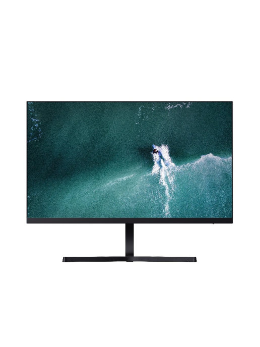

Xiaomi / Монитор 23.8 дюймовый IPS FHD

Краткое описание:
23.8 дюймовый IPS FHD дисплей обеспечивает четкие и реалистичные детали изображения боковой экран без полей для обеспечения захватывающего просмотра.
Подробное описание:
Поверхность экрана матовая Разрешение экрана 1920x1080 Угол обзора 178 градусов Частота обновления 60 Гц Диагональ 23.8" Формат экрана 16:9 Яркость 250 кд/кв.м Контрастность 1000:1 Время отклика 6 мс
Технические характеристики:
| Интерфейсы | Экран | ||
|---|---|---|---|
| Входы/выходы | VGA (D-Sub), HDMI | Тип матрицы | IPS |
| USB вход | нет | Технология Flicker-free | есть |
| Габариты | Функции | ||
| Ширина | 539 мм | Регулировка по высоте | Нет |
| Высота | 420 мм | Встроенные динамики | Нет |
Характеристики товара:
- Вес с упаковкой (кг) 3.96 кг
- Вес без упаковки (кг) 2.7 кг
- Высота предмета 41.95 см
- Ширина предмета 18.12 см
- Ширина упаковки 10.5 см
- Высота упаковки 41.5 см
- Глубина упаковки 61 см
- Страна производитель:Китай